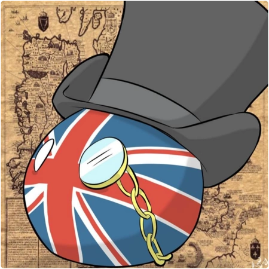
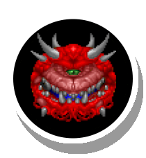
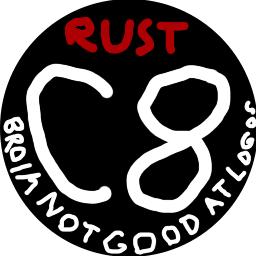

 BallsDex Fork
A fork of BallsDex with a battle package and a merge package.
I recommend only taking the packages from this.
 DOOM in Geometry Dash
DOOMGeneric running as a Geometry Dash mod.
For Geode 3.2.0 (will update when I get around to it)
 Rust Chip-8
A small Chip-8 emulator I made to learn Rust.
Supports Chip-8, SuperChip, and partially XO-Chip!
 Rust NES
Rust NES
A simple NES emulator I made in Rust.
Read the README on how to use the emulator.